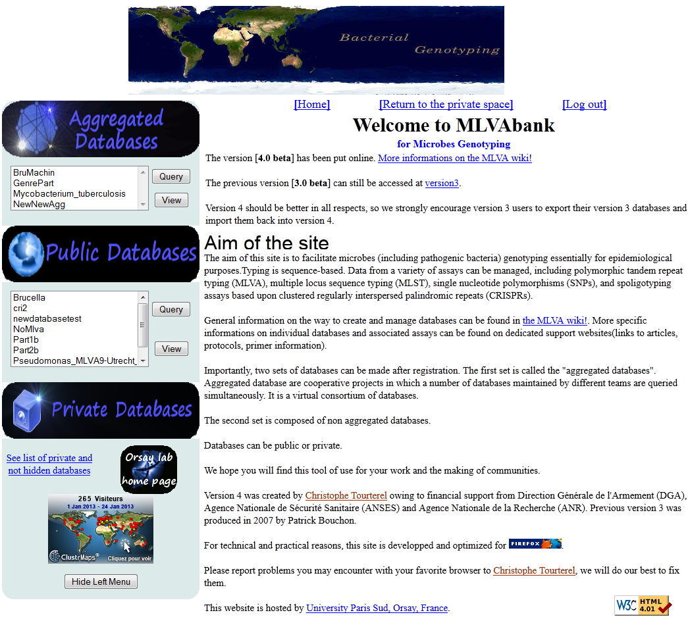
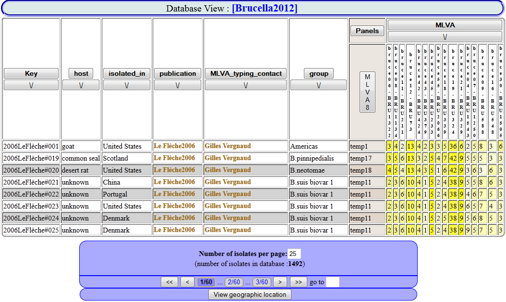
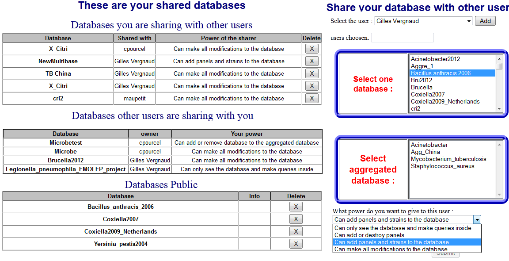

MLVABank
Bases de données internet de suivi des agents infectieux


Principes
- Pouvoir representer ses données de typage:
-
- MLVA
- MLST
- SNP
- Spoligotyping
- CRISPR
- Gerer ses données
- Comparer des echantillons sur les bases de données
- Generer automatiquementles genotypes des vos données
- Conglomerer plusieurs bases de données ensemble
Creation
- Matériel requis: Connexion, un fichier csv
- Peut de manipulation (minima de 6 clics)
- Plusieurs options ajoutables (géolocalisation, panel...)
- Création de base de donnée rapide
Importer
- Choix des options(géo,panel,etc...)
- Selection rapide des types de données
Exploitation
- Visualiser les bases de données completes
- Rechercher les souches les plus proches
- Représenter les géolocalisations et les arbres
Visualiser
- Masquer,trier les colonnes
- Modifier l'affichage des données (octal,lien...)
Rechercher

- Masquer les colonnes et les genotypes identiques
- Modifier l'affichage des données (octal,nom et commentaire des génotypes)
Représenter

- Les géolocalisations
- Les dendrogrammes
Gestion
- Editer les souches, les marqueurs
- Panels et Genotypes
- Partage et mise en publique
Editer

- Modifier les metadata, les marqueurs...
- Maitriser les données: ajout, modification et suppression
Classifier

- Créer des panels pour vos marqueurs
- Generation et gestion automatique de vos genotypes
Partager
- Partager des données avec d'autres utilisateurs
- Mettre en publique vos données
- Masquer l'éxistance de vos données
Aggregation
- Aggreger plusieurs base de données
- Mise en commun et Interraction
- Contrôle de vos données
Aggreger

- Creer votre propre aggregated
- Colaborer avec une déjà existante
Fusionner

- Mise en commun de l'ensemble des bases de données d'une "Aggregated"
- Accès aux differents elements simultanement (géolocalisation, query...)
Contrôler
- Mise à jour automatique de vos données sur l'aggregated
- Enlever les bases plus souhaités de votre aggregated
- Ne plus faire partie d'une aggregated en un simple clic